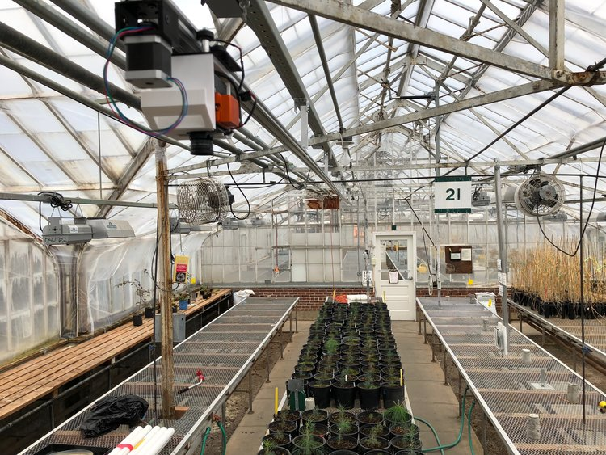

Automate Environmental Data Collection
Automate an environmental sensor package that travels along a railway setup.
Create scheduling runs, choosing what data to collect and when.
Easy Data Analysis
View and analyze the data collected by various collection runs, bots, and sensors.
